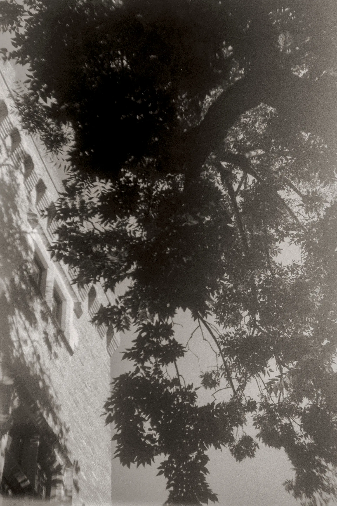

my first
ever roll.
I'm Liam Brincat, a photographer born and raised on the island of Malta. I likely picked up my first ever camera before the age of 3; however, it took me 18 years to really take a photo. My first camera was a Halina Paulette trashcam; my first roll was Fomapan 100; my first adventure was in the city I then called home: Toulouse; my first shot was a brick wall. Click me if you'd like to see those photos.



rue du pont de tounis